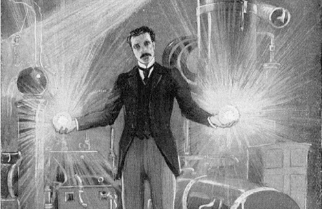
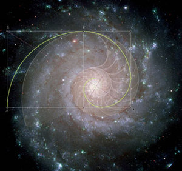

How do Computers Work?

Black Magic
It's a question I've always been interested in. Even though I understand most of the hardware components, what they do and how to build a computer from them, and I understand the software, I can write basic code now and I've even written a program, it's still very mysterious to me how it all ties together. How can I type a few things on a screen and give a sort of life to things?
I know it's not a simple topic or easy to summarize or everyone would already know it, but I wanted to take a crack at understanding exactly what was going on behind the magic curtain.
Vertigo
I did some research online (using my computer to understand my computer) and I also watched a documentary on Netflix called American Experience: Silicon Valley about the history of silicon valley and the early days of computers which was really informative.
In my research I found there's no easy place to start. The further you look down the rabbit hole the more there is to know. Even quantum computers are being worked on now which to fully understand you'd need to know quantum mechanics (which I know a little about) but I'm attempting to summarize here so that's a bit beyond the scope of this article. Since we have to draw a line somewhere we can start at the atomic level.

Electromagnetism
Atoms, whose name comes from the latin/greek root atomos meaning a- not + tomos divisible, were conceptualized as the basic building blocks of all life and matter in the universe. Of course once they were discovered it only took one person to look inside and see beyond the curtain that atoms themselves were made of even smaller sub-atomic particles (which of course are made of even smaller elementary particles, which are made of...) But knowing atoms allows us to understand one of the four fundamental forces or interactions in nature: electromagnetism.
The simpliest explanation as it pertains to computers, is that atoms in their natural balanced state are composed of a specific number of neutrons, protons and electrons. Electrons because of their location outside of the nucleus are the easiest to move around, and atoms which have lost or gained electrons naturally seek to balance themselves out. When in close enough proximity, or when connected via a wire for example, positively charged atoms, those lacking their normal number of electrons, will attract electrons from negatively charged atoms, those having too many electrons, causing electric current.

The Path of Least Resistance
So everyone knows electricity is at the heart of computers. Every time your phone or notebook is running low on battery and you're on the hunt for an outlet you're more then aware of that. But how does this help us understand how computers work?
We mentioned the wire above, which is one way we're all familiar with for conducting electricity. But not all materials in nature are equal conductors. Some have low electrical resistance and allow electrons to flow easily across them, others have high electrical resistance and make it very difficult for electrons to flow through them. This matters because electricity, like all energy in nature, follows the path of least resistance. Water flows downstream, as they say. This takes us to the invention of the semiconductor. A semiconductor as it sounds, is a material whose properties of conductivity can be altered or changed. An on/off switch of sorts.
Switching Logic
Now it starts to get a bit complex. But this is where we start to see the advent of the transistor. In simplest terms, a transistor is just the power of a semiconductor harnessed in a widget. Think of it like an on/off switch but also like a lego. Transistors can be connected to other transistors to trigger each other in chain reactions. It's like a maze for electric current, or like a railroad where depending on which tracks you switch the train will take a different direction. Early computers, see the Turing machine for more information on this, were able to use these controllable electric signals to simulate basic Boolean Logic. Now I am not familiar at all with these concepts, but the ideas behind them seem to be based largely on distinguishing and comparing different things. If you can say that two things are the same, a = a and two things are not the same, a != b then you have the building blocks of logic. And all the various possibilities you need to represent, see logic gates and NAND, to have what is considered to be a functionally complete system which can construct all the truth tables, can be made using these electric signals. We represent these, as we're all familiar with, as 1s and 0s. Which equate to electricity received = 1 and electricity not received = 0. The best way I've come up with to think about it is morse code. With a simple two input system, you can construct any language in the world and say anything that can be said.
If the transistors are the computer's nervous system, its memory is the capacitors. Capacitors are objects that simply hold a charge. You can pass in electrons and let out electrons, and check at any time to see if the capacitor is charged. This allows us to store and retrieve whether an electric signal was received, which when represented as 1s and 0s allows us to build logic like morse code.
To coordinate and synchronize all this flowing of current and prevent signals from running into one another a computer uses a clock. At its most basic any time counting device is just an object that "ticks" at a regular interval. Those intervals can be added up to measure seconds, days, even eons, but it's all done by counting regular intervals found in nature or using man-made objects. Computers often contain a quartz or similar material with a regular oscillation period which can be measured and utilized. In most computers, CPU operations are done between "ticks" and read/write operations are done during the "ticks" to maintain order and avoid trains running into one another on the track.

Language of Nature
So we have this machine that can send electrons around. It can store and "memorize" whether it received a signal. And it can light up pixels on a screen, again a simple on/off signal to a single light-emitting tiny dot. But with 1920 x 1080 of those dots in a row you can see anything in the world in high-definition. Our eyes receive single photons in a similar binary system which are converted to electric signals by our retinas and sent across our nervous system on wires to our brain. And somehow our brain puts together all these on/off signals of light into a "morse code" of what we call vision, and thousands of tiny dots turning on and off into images on a screen including symbols called written language that mean something to us. And we can press on keys and mice and touch pads and send electric signals into the system, which are never more then electric signals. But from them we can construct machine code, and from that computer programming languages and suddenly we have a way of making the signals do a particular thing in a particular way. And we give that a name, we call it a 0 or a 1, but from those humble begins we can add them and get another 1. But then those two 1s become a 2 and then a 3 and then all of mathematics.

It's pretty crazy to think that such complexity in the world can be reduced to something so simple. Truly understanding it all beyond the rabbit hole becomes a question of philosophy. It's the nature of our world that we're just harnessing to our needs in a specific and precise way. We don't need to completely understand it in order to utilize it any more then we need to know how to raise our hand. It's pretty remarkable, from the 0s and 1s of mathematics, to the brushstrokes of painters to the light-sensitive grain of photography. I suppose once you understand that all our senses are captured and transmitted in on/off signals, and that's all we've ever known, that it makes sense we would build our tools around this concept as well. The real magic seems to be in our own brains, that we're able to piece all these signals together into a coherent conscious experience. Whatever that is :)

Additional Resources:
American Experience: Silicon Valley
From Nand to Tetris in 12 steps
Quantum Computers
Electromagnetism
Turing Machine
Logic Gates
NAND
Machine Code
How Do Computers Work? - Programmers Stack Exchange